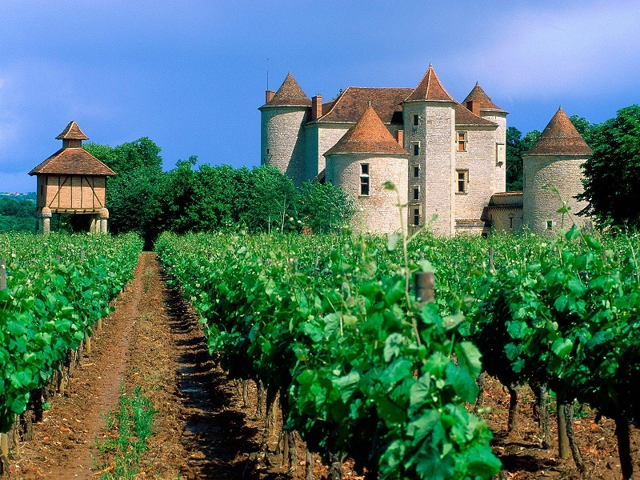
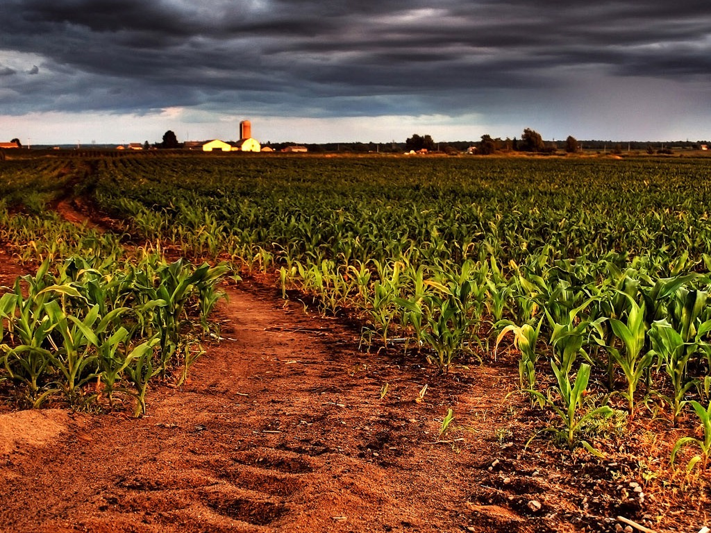
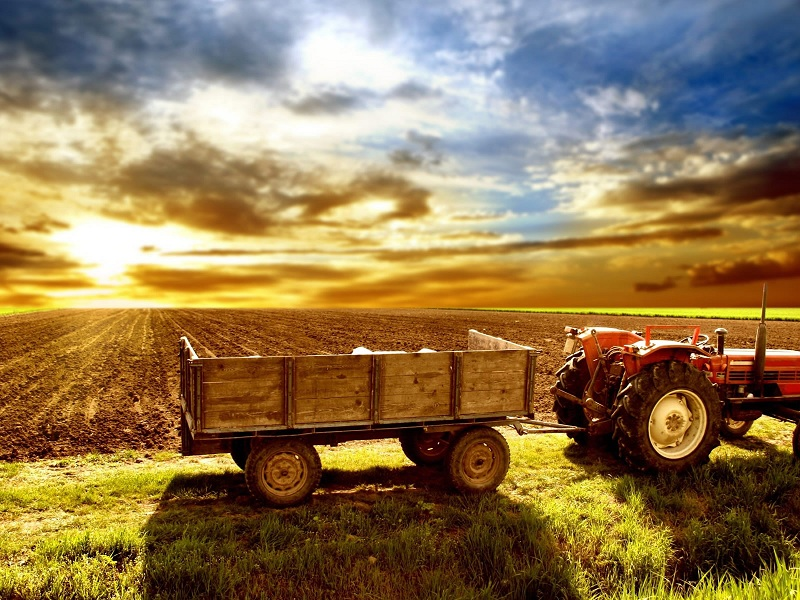
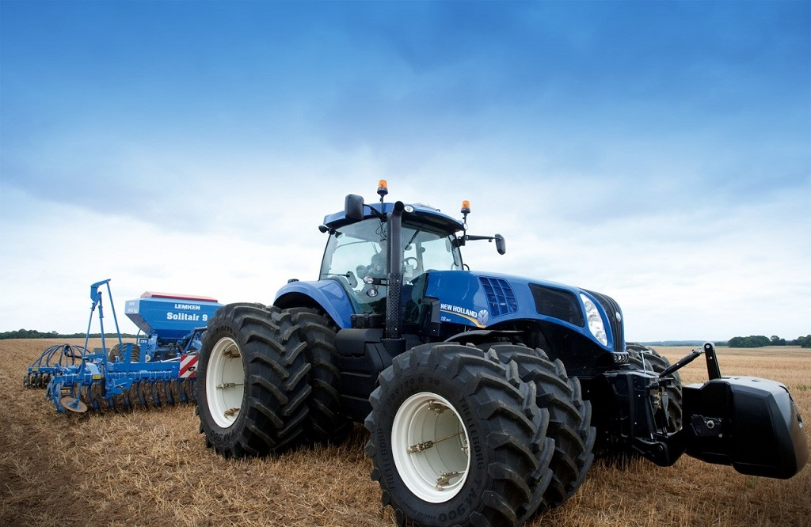
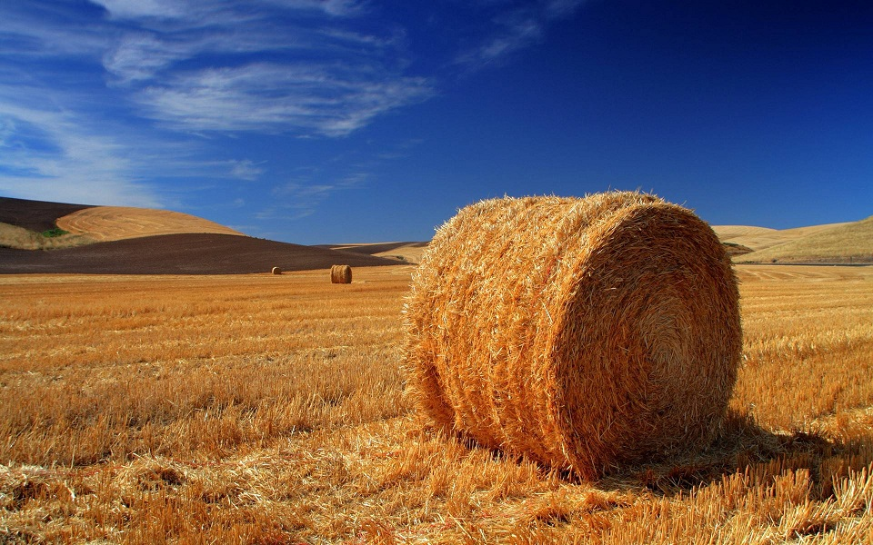
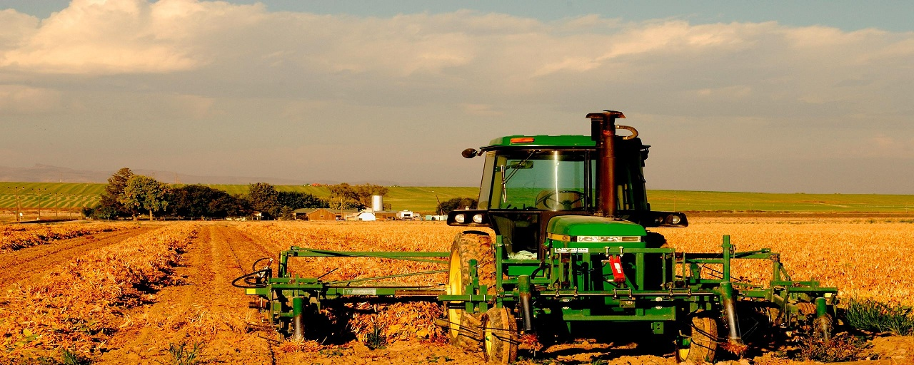

Agricultura este știința, arta sau practica care se ocupă cu procesul producerii de hrană vegetală și animală, fibre, respectiv diverse materiale utile prin cultivarea sistematică a anumitor plante și creșterea animalelor.
Se intelege prin fertilitatea solurilor aptitudinea naturala a acestora de a promova o anumita productie ( cantitate de biomasa vegetala ), datorita, pe de-o parte, acumularilor de coloizi organo-minerali specifici ( coloizi argilosi si humici care sufera un proces de complexare dand nastere complexului argilo-humic ), iar, pe de alta parte, unei vieti microbiene active. Un sol fertil este caracterizat si de alti factori de productie cum este regimul apei, regimul climatic, repartitia precipitatilor si temperaturilor in timpul anului, roca mama pe care s-au dezvoltat solurile si care conditioneaza atat reactia solului ( valoarea pH ) cat si porozitatea si textura acestuia.
Viata micropopulatiei solului ( bacterii, alge, ciuperci microscopice, fauna ) joaca un rol primordial in geneza si mentinerea fertilitatii solului. La scoala de agricultura din Ebenrain-Sissach - Elvetia, este folosit ca indice de fertiliate a solului numarul de rame la metrul liniar de aratura ( urma plugului ).
 Un alt factor extrem de important pentru obtinerea de recolte crescute il constituie biodiversitatea. Intrucat din motive de sistematizare a lucrarilor solului si a tehnicilor de recoltare este eficienta monocultura, adica semanarea anuala a si multianual unei singure specii vegetale, se constata fenomene de scadere a recoltelor in timp, datorita unei unilateralizari a vietii din sol, asa numita oboseala a solului, s-a descoperit importanta alternarii plantelor agricole. Inca din antichitate se observase efectul pozitiv al cultivarii leguminoaselor asupra productiilor ulterioare a graului. In prezent, se stie ca acest efect se datoreaza acumularii de azot organic in sol, care devine apoi treptat disponibil pentru grau. Introducerea in secolul al XVIII al asolamentului Norfolk care, bazat pe efectul amintit al leguminoaselor, a introdus in mod obligatoriu sola de lucerna sau de trifoi de 3 ani in alternanta cu graul, a avut drept efect dublarea in scurt timp a productiilor de grau. In acelasi timp, crescand si productia de furaje, a crescut si numarul de vaci, si implicit de gunoi de grajd care constituie baza pentru intretinerea si chiar a sporirii fertilitatii solurilor. Asolamentul Norfolk constituie un exemplu stralucit de marire a productiilor prin reorganizarea tehnologiilor agricole in baza observatiei unor legi naturale.
Multi specialisti confunda fertilitatea solului cu productivitatea lui. Aceasta confuzie se datoreaza folosirii exclusive a unui criteriu exterior, cantitatea de produse obtinute intr-un timp limitat.
Intr-adevar se constata ca pe unele substraturi lipsite de fertilitate si in consecinta neproductive cum sunt nisipurile, prin luarea unor masuri cum ar fi adaosul unor cantitati de argile si ingrasaminte organice ( sau si chimice ) ele incep sa produca.
Dar cand observatiile se aplica la productivitatea solurilor agricole fertile, efectele sunt inselatoare in doua sensuri :
1) Ingrasamintele chimice pot produce cresteri cantitative spectaculoase ; in acest sens analiza chimica a produselor arata caracterul inselator al rezultatului obtinut. Astfel intr-o experienta comparativa facuta cu cartofi, productiile obtinute in solele ( suprafata experimentala destinata aplicarii unor anumite variante de tehnologii ) chimizate au fost cu 24% mai mari decat in solele tratatate numai cu gunoi de grajd ; cand s-a determinat continutul de apa, cartofii din solele chimizate au prezentat un continut de apa cu 25% mai mare decat cei tratati organic. In consecinta cand ei se cumpara in piata, se cumpara 25% din greutate apa sub numele de cartofi. Acesti cartofi cu edem ( umflarea tesuturilor prin retinerea apei in cantitati mai mari decat normal ) nu se pot conserva mult timp, caci sunt repede atacati de mucegaiuri si produc mari pagube in depozite pe seama consumatorului.
2) S-a constatat ca aplicarea chimizarii altereaza fertilitatea solului, dupa cativa ani productiile scad, se mentin inca 2-3 ani cu pretul cresterii de ingrasaminte chimice care fac sa se distruga resturile de humus acumulat in sol. In paralel, se altereaza calitatea produselor vegetale care sunt tot mai masiv atacate de daunatori necesitand folosirea de pesticide si ierbicide, incet-incet, planeta se intoxica si odata cu ea si oamenii. Apar „bolile civilizatiei”.
 Din pacate, evolutia omenirii a fost tot timpul ghidata si decisa de interesele banesti. Nu putem vorbi de rationamente economice, caci a practica tehnologii agro-chimice care distrug principalul mijloc de productie din agricultura, care este solul, nu se poate considera ca este o decizie stiintifica.
Trebuie adus aici, un omagiu chimistului german Justus von Liebig care, plecand de la criterii exterioare superficiale, a fundamentat aplicarea ingrasamintelor chimice. Dar urmarind un numar de ani efectele ingrasamintelor chimice, el ajunge sa ceara ca nu cumva sa se aplice solurilor ingrasamintele chimcie. Era insa prea tarziu. Aceasta tehnica devenise deja o afacere. Justus von Liebig a murit in mari framantari morale la gandul ca a deschis omenirii o cale de distrugere a pamantului. Omagiem in Justus von Liebig omul de constiinta morala care l-a facut sa conteste conceptia elaborata care-l facuse celebru.
In cei peste 150 de ani de la aparitia primei editii a lucrarii lui Justus von Liebig, multe evenimente au confirmat temerile sale tardive. Amintim numai ca in SUA, anul 1934 a fost declarat an de doliu national. Atunci vanturi violente si ploi abundente au distrus definitiv solul pana atunci foarte productiv, de pe multe milioane de hectare, datorita disparitiei humusului care asigura anterior coeziunea solului ( structura acestuia ).
Spiritul de afaceri s-a grabit sa dea ingrasamintelor chimcie un nume atractiv : fertilizanti chimici. Dar ce fel de fertilizanti pot fi subtantele care distrug fertilitatea solurilor ?
 In secolul XX, dupa cel de-al 2-lea razboi mondial, s-a trasat sarcina intocmirii unui plan de dezvoltare a agriculturii intensiv chimizate in tarile UE de catre Sikko von Masholt, fost ministru al agriculturii in Olanda. In 1978, dupa 38 de ani de aplicare a planului sau, el raspunde unui reporter al buletinului IFOAM ( Federatia Internationala a Miscarilor de Agricultura Organica ) la intrebarea : „aplicarea exclusiva a unor practici deduse din conceptii biologice, ar premite hranirea populatiei lumii ?”.
Raspunsul a fost : „daca vom continua sa folosim substante chimice, vom fi fortati sa utilizam pentru plante substante tot mai toxice care altereaza echilibrul biologic (…) Aplicarea de ingrasaminte chimice in cantitati din ce in ce mai mari va duce la fenomene de eroziune. Concluzia este : daca vom continua astfel nu vom putea hrani populatia globului. Daca lucram cu tehnologii gandite dupa criterii biologice, vom putea face intotdeauna agricultura. Atata timp cat exista Soare, Apa, Sol, si Microorganisme, vom putea produce neintrerupt daca asiguram echilibrul ecologic (…) Exista exemple care arata ca avand cunostintele necesare si grija corespunzatoare, se pot obtine productii mari si fara ingrasaminte artificiale sau pesticide de sinteza (…) O agricultura integrata in ciclurile naturale necesita cunostinte ample in domeniul biologiei si agronomiei”.
Cele expuse mai sus ne permit sa tragem o concluzie care devine premiza pentru ceea ce urmeaza : sistemul biologic are legi proprii in cadrul universului, legi care sunt supraordonate in fiecare formatiune vie individuala, sau in fiecare asociatie de organisme sau in sistemul biosferei, legilor fizico-chimice care guverneaza materia nevie.  Pentru a salva biosfera inclusiv societatea umana, trebuie sa respectam si sa favorizam legile care asigura rezistenta interioara a sistemelor biologice si nu sa nascocim metode exterioare de aparare ( ierbicide, pesticide, antibiotice, etc. ). Din aceasta cauza, nu trebuie sa consideram ca fiind importanta numai productia cantitativa de plante agricole si animale, ci salvarea fertilitatii solurilor. Aceasta nu este o corvoada, ci o obligatie morala.
Adeseori cand in trecut sustineam acest punct de vedere, sefi din domeniul agriculturii imi raspundeau cu superioritate : „dar noi nu hranim solul, noi hranim planta”. Daca replicam ca trebuie sa respectam cerintele ecologice ale fiecarei specii vegetale, mi se raspundea : „acum noi facem legile ecologice ale plantei”.
Ca reactie a efectelor distructive ale agriculturii chimizate, au inceput sa se faca auzite inca din secolul al 19-lea, voci care atrageau atentia asupra perspectivelor sumbre care se profilau la orizont si care cereau sa se ia masuri. Astfel, in secolul al XX-lea, au aparut o serie de teorii si sisteme agro-fito-tehnice bazate pe studiul si elaborarea de tehnologii care se integrau in marile legi cosmico-biologice care stau la temelia productiilor agricole.
Primul sistem oficializat de agricultura biologica, a fost agricultura organica engleza ; fundamentarea teoretica a acesteia a facut-o Sir Albert Howard inainte de primul razboi mondial. El spunea ca a invatat sa faca agricultura sanatoasa de la taranii indieni.
Din nefericire, termenul de agricultura organica, insuficient explicat in popularizarea facuta acestui sistem, a creat ideea falsa ca orice materie organica este un ingrasamant bun pentru sol. In consecinta, in unele cazuri au fost folosite ca ingrasaminte si deseuri industriale toxice, fara nici o prelucrare.
 Al 2-lea si cel mai important sistem de agricultura biologica a fost cel oficializat in cursul tinut in 1924 la mosia de la Coberwitz a familiei Keyserlink, de Rudolf Steiner. Acest sistem, intitulat de cei care l-au aplicat ulterior agricultura biologic-dinamica ( sau bio-dinamica ) , inaugureaza metode originale. Rudolf Steiner, intemeietorul stiintei spiritului moderne ( antroposofia ) constientizeaza pentru prima data importanta factorului cosmic planetar care, in ecositemele naturale, actioneaza prin biodiversitate, iar in monocultura intensiva este blocat prin unilateralitatea culturilor. Constientizand corect procesele active in natura, Rudolf Steiner elaboreaza si tehnologiile subtile are dirijarii fermentatiilor care au loc in pregatirea gunoiului de grajd ( compostare ) in platforme special amenajate. Descrierea si pregatirea asa-numitelor preparate bio-dinamice, necesitand o prezentare speciala, o rezervam unui articol ulterior.
Dupa agricultura bio-dinamica, a aparut un alt sistem de agricultura in Franta ( Lemaire-Boucher ) care utilizeaza diferite preparate avand caracter de ingrasamant, de amendament si de mijloc de combatere obtinute din alga marina Lithotamnion. Sistemul elvetian de agricultura Muller-Rusch se bazeaza pe o aprofundare a cunoasterii proceselor microbiene care stau la baza fertilitatii solului.
Mai multe detalii se gasesc in cartea „Agricultura biologica” pe care am piblicat-o in 1981, ed. Ceres, Bucuresti.
Putem defini acum continutul diferitelor denumiri generice date unor categorii de siteme de agricultura dupa cum urmeaza :
1) Agricultura chimizata : sistem de agricultura care urmareste cresterea cantitativa a productiilor vegetale si animale prin folosirea de ingrasaminte chimice industriale si a altor produse de sinteza chimica menite combaterii parazitilor si stimularii artificiale a unor procese.
2) Agricultura biologica : orice sistem de agricultura bazata pe tehnologii elaborate cu scopul de a mentine un echilibru biologic insotit de mentinerea fertilitatii naturale a solului. Dintre aceste sisteme, singurul care abordeaza omnilateral problemele agriculturii tinand seama de importanta tuturor factorilor ambientali cosmo-telurici ca nivel sistemic integrator si de rolul omului ca organizator, este Agricultura bio-dinamica. Acest mod de abordare se reflecta si in denumirea de „organism agricol” data fermei sau gospodariei care o aplica. In mod ideal organismul agricol include atat nivelul sol si productia vegetala ( sursa de alimente si furaje ), cat si nivelul animal reprezentand componenta sufleteasca ( sursa de alimente si ingrasaminte organice ) si nivelul uman, spiritual ( sursa de masuri organizatorice ). In mod ideal, organismul agricol nu importa decat ingrasaminte minerale ( produse naturale ) ca, de exemplu, pulberea de roci vulcanice ( sursa de micro-elemente ), de calcar daca solurile sunt prea acide, sau de nisip silicios daca solurile sunt prea argiloase.
3) Agricultura ecologica este un termen venit din afara agriculturii. El desemneaza o agricultura care se integreaza in ansamblul de ecosisteme naturale pe care nu le polueaza. Ecologia ca stiinta nu a elaborat niciodata tehnologii specifice, ci pune eticheta agriculturii integrate in peisaj. Din aceasta cauza, denumirea de produs ecologic este nefondat, el fiind sinonim cu „produs sanatos” subintelegandu-se ca este rezultatul unei tehnologii gandite consecvent biologic.
Agricultura


